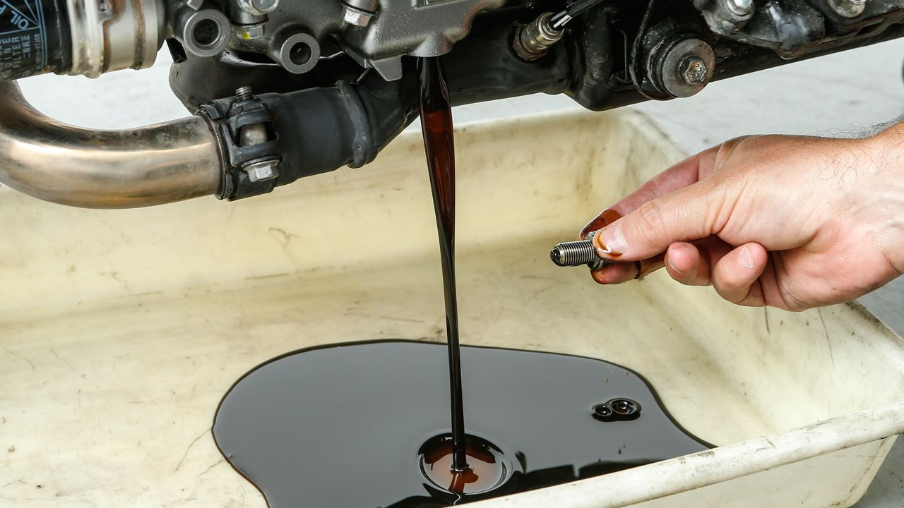

<!DOCTYPE html>
<html lang="en">
<head>
    <meta charset="UTF-8">
    <meta http-equiv="X-UA-Compatible" content="IE=edge">
    <meta name="viewport" content="width=device-width, initial-scale=1.0">
    <title>Cambio de Aceite</title>
</head>
<body>
    <!-- <h1>CAMBIO DE ACEITE PARA LA MOTO</h1>
    
    <ol>
     <li> Conseguir repositorio para aceite, llave 12, embudo y aceite nuevo</li>
     <li>Utilizar llave 12 para desajustar la tuerca inferior para que salga el aceite</li>
     <li>Poner el repositorio debajo de la salida de aceite</li>
     <li>Dejar salir todo el aceite de la moto hasta que no salga nada</li>
     <li>Tapar con la tuerca nuevamente donde salia el aceite</li>
     <li>Desajustar tapa donde ingresa el aceite nuevo </li>
     <li>Introducir el embudo donde desajustamos en el paso anterior</li>
     <li>Verter el aceite nuevo en el embudo para que vaya entrando a la moto </li>
     <li>Al finalizar el nuevo aceite sacar el embudo</li>
     <li>volver ajustar la tapa donde introdujimos el aceite</li>
    </ol> -->
    <script src="algoritmo.js"></script>
</body>
</html>